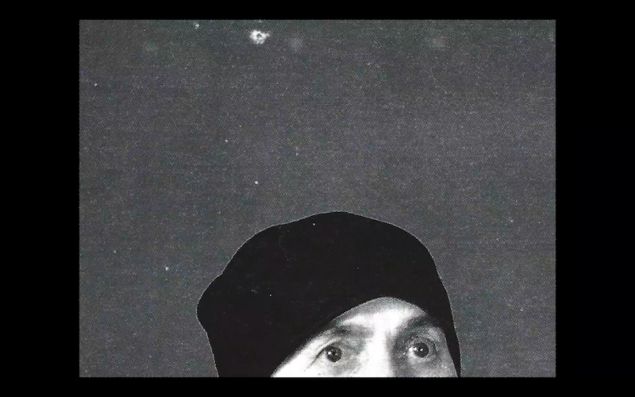
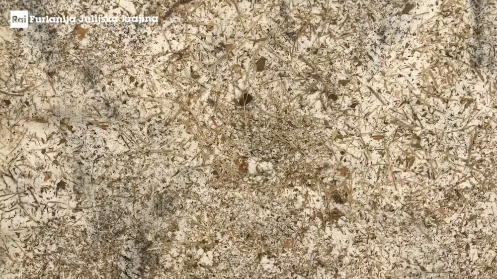
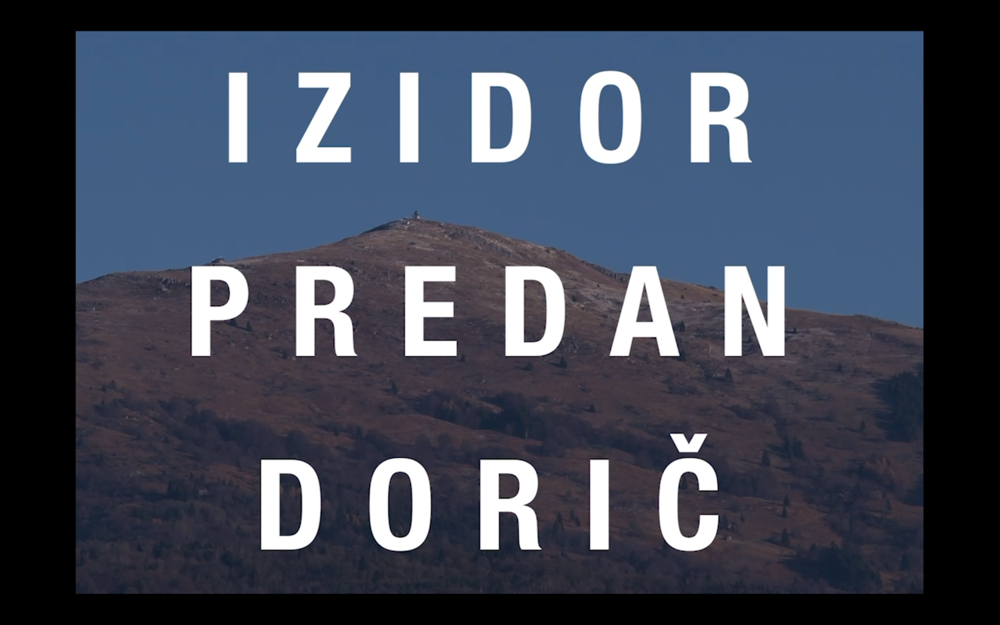
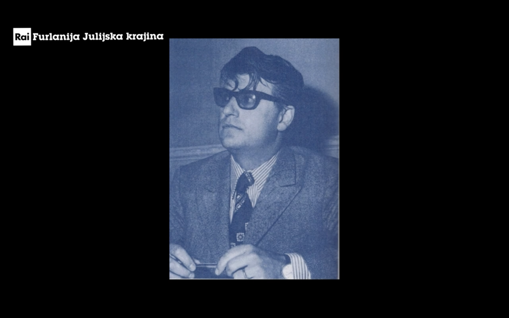
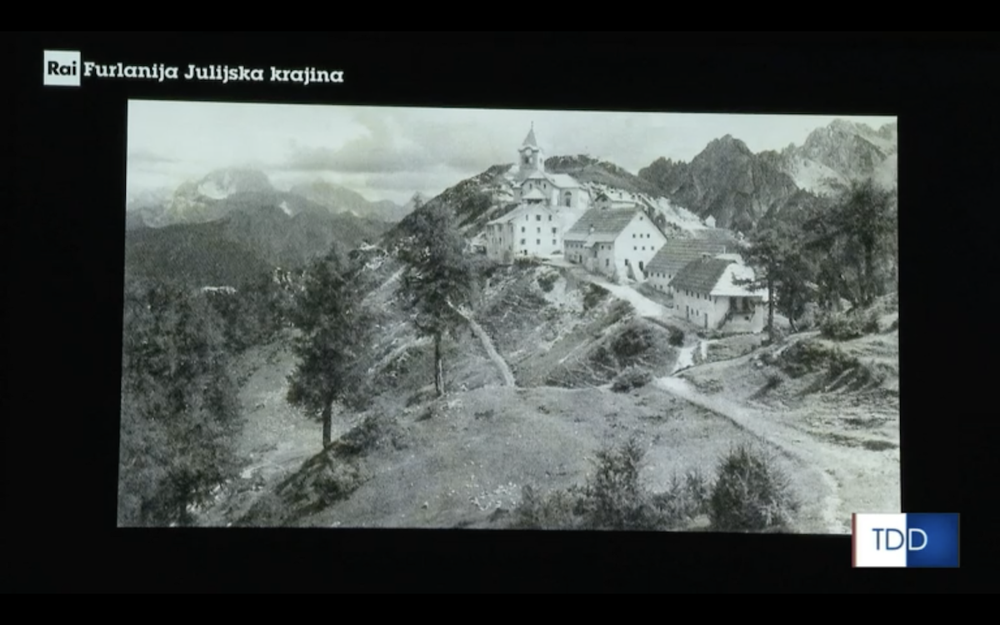
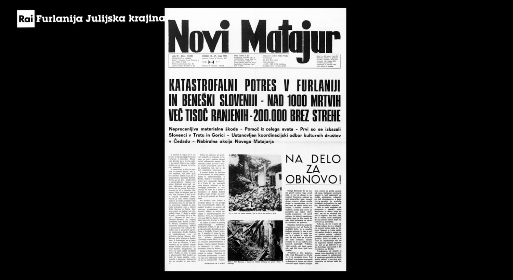

Znamenje/Sign
(12', 2023, Matej Okroglič, Žiga Ipavec, Aljaž Škrlep)
I am lost in the forest. I am and I am not. Then I look at the ground. I bury my face in the wet earth
and I bite wildly into the cold soil with my mouth and I lick the rotting root of the world with my
tongue and I whisper: “I am a forest, and a night of dark trees: but he who is not afraid of my
darkness, will find banks full of roses under my cypresses.”
This short experimental film is a little reminder of three friends spending some time together in Topolò in November 2022.
It is also a tribute to a photographer from Benečija called Tin Piernu, who did amazing portraits of people living here in the 20th century. He often did so for practical reason of people needing photographs for identity documents or souvenir images to send to emigrant relatives.
Photographs used in the film are taken from the book “Tin Piernu: Fotograf s Tarčmuna” (Študijski center Nediža, 2011, ur. Roberto Del Grande, Alvaro Petricig, Michela Predan)
It is also a tribute to getting lost in the forest.
→ Watch the full film ←

Franko Vecchiet
(27', 2023, Aljaž Škrlep, Video Pro)
Dokumentarni portret Franka Vecchieta, tržaškega slikarja, grafika, vsestranskega umetnika. Grafike najrazličnejših tehnik, risbe, kolaži, knjige umetnika, mozaiki, instalacije v zaprtih prostorih in na prostem, poigravanja z najrazličnejšimi predmeti — baloni, papirnatimi rožami, razbitimi steklenicami, vrečami, polnimi smeti, soljo in morskimi naplavinami: vse to in še mnogo več je vpeto v igrivi ustvarjalni opus Franka Vecchieta, ki po umetnosti, stičišču raznih kultur, posega zato, da lahko z njo poseže v realno življenje. Dokumentarni portret nas pospremi skozi življenje umetnika, njegove karierne postojanke in ustvarjalne principe, ter predstavi zgodbo grafike, likovne umetnosti, ki je ravno v času Vecchietovega delovanja doživela svoj vrhunec.
→ Oglej si film ←

Izidor Predan - Dorič
(45', 2022, Aljaž Škrlep, Video Pro)
Izidor Predan - Dorič se je rodil leta 1935 v Gorenjem Bardu. Bil je politik, novinar, pisatelj in kulturni delavec, ki je komunistične ideale svobode in solidarnosti skozi svoje dolgoletno delovanje vedno povezoval s slovensko zavestjo. Film se skozi pričevanja Doričevih življenjskih sopotnikov sprehodi skozi njegovo otroštvo, zaznamovano s prihodom partizanov v Benečijo, začetke političnega delovanja in afero, zaradi katere je moral v zaporu presedeti nekaj več kot pol leta, ne pozabi pa se dotakniti tudi njegovega literarnega ustvarjanja. Zgodba o Doričevi politični načelnosti in neuklonljivosti ter poetični nežnosti, ki še danes napaja beneške kulturne delavce, tako predstavlja pomemben delec v zgodovini Benečke Slovenije.

Viljem Černo
(56', 2022, Aljaž Škrlep, Video Pro)
Velik del te dokumentarne oddaje je zgrajen okrog še nevidenega pogovora s profesorjem Viljemom Černom, kulturnim delavcem, politikom in pesnikom, ki se je rodil leta 1937 v Bardu v Terski dolini. Izseki iz pogovora, ki je bil posnet zgolj eno leto pred njegovo smrtjo, se prepletajo z izjavami njegove družine, prijateljev in sodelavcev, ki nam skozi osebne zgodbe in anekdote pomagajo izluščiti podobo politično zatirane Beneške Slovenije 20. stoletja ter raziskati vpliv, ki ga je na to podobo imel Viljem Černo, zadnji veliki beneški Čedermac.

Rafko Dolhar: Pot iz zelene doline
(2021, Aljaž Škrlep, Video Pro)
Rafko Dolhar je v Trbižu rojen slovenski zdravnik, politik, publicist, pisatelj in planinec. Z gibljivimi podobami se sprehodimo po poti, ki jo je Dolhar opravil skozi življenje. Svojo domačo zeleno dolino je moral zaradi šolanja najprej nadomestiti s Trstom in kasneje Padovo, kjer je študiral medicino. Delo ga je privabilo nazaj na kras, kjer se je zaposlil v sanatoriju v Nabrežini, kasneje pa nazaj v Trst, kjer je pričel predavati na tamkajšnji univerzi. V tržaškem občinskem svetu pa je uspel kot jeziček na tehtnici Slovencem v Italiji priboriti marsikatero pravico. Vso njegovo razvejano delovanje je spremljala misel, osebni moto: Nihče ne zmore narediti vsega, a kar zmore, to mora.

Novi Matajur: glasnik Beneških Slovencev
(30', 2021, Aljaž Škrlep, Video Pro)
Novi Matajur, tednik Slovencev videnske pokrajine, je leta 2020 praznoval 70-letnico svojega nastanka, in sicer še pod prvotnim imenom Matajur. Z ožjimi sodelavci in prijatelji časopisa se v polurni oddaji sprehodimo ne le skozi zgodovino samega tednika, temveč tudi skozi pestro zgodovino Benečije in medtem spoznamo vlogo, ki jo je Novi Matajur vzel nase na tem burnem povojnem – z železno zaveso ločenim – stičišču zahodne in vzhodne Evrope, ter kako se je ta vloga skozi čas, vse do danes, spreminjala. V oddaji so sodelovali odgovori urednik Novega Matajurja, Miha Obit, bivša odgovorna urednica, Iole Namor, sodelavec in predsednik zadruge, Rudi Pavšič, ter hčerka ustanovitelja Matajurja, Vojmirja Tedoldija, Olgica Tedoldi.